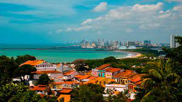

O Alto da Sé é um dos locais mais emblemáticos de Olinda, situado no coração do centro histórico da cidade. Oferece uma vista deslumbrante da cidade, do mar e das construções históricas que caracterizam Olinda.
Aqui, você encontrará igrejas seculares, ruas de paralelepípedos, casarões coloniais e uma atmosfera encantadora que remete ao passado. O Alto da Sé é também famoso por abrigar festas populares, como o Carnaval de Olinda, que atrai milhares de visitantes todos os anos.
Não deixe de visitar o Alto da Sé quando estiver em Olinda. É um lugar único que proporciona uma experiência cultural e histórica inesquecível.
Clique aqui para descobrir mais sobre os pontos turisticos de Olinda 